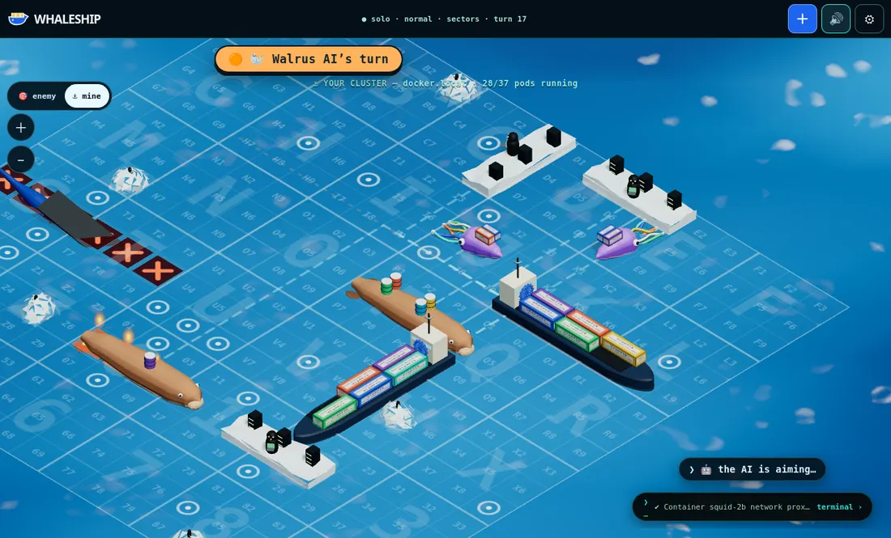
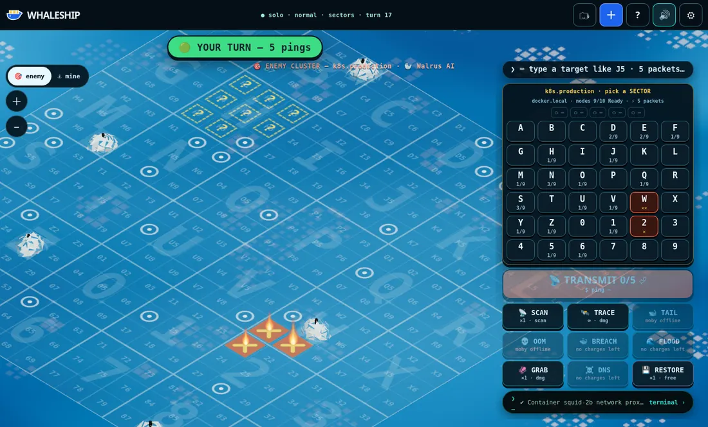
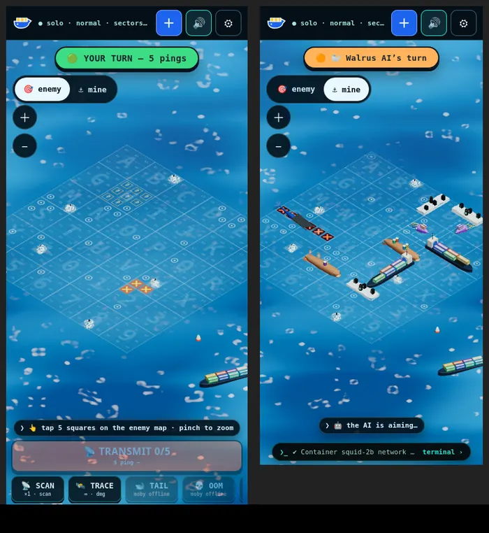

🐋 Moby · docker host
Size 6. The big whale with a container rack. Powers Tail Slap and OOM Kill.
WHALESHIP is Battleship where the ships are infrastructure. Your fleet of container-carrying whales, Kubernetes carriers and Linux icebergs hides on a 3D ocean. Find the enemy's fleet and sink every vessel before they sink yours.

The battlefield is an 18 × 18 grid split into 36 sectors, named A–Z then 0–9, six across and six down. Every sector is a 3 × 3 block numbered like a phone keypad:
A B C D E F G H I J K L M N O P Q R S T U V W X Y Z 0 1 2 3 4 5 6 7 8 9
1 2 3 4 5 6 7 8 9
So Q5 is the centre of sector Q, and 35 is the centre of sector 3. Sectors are only addresses — a vessel can sit across a sector edge.
| Phone | Desktop | |
|---|---|---|
| Aim | Tap a square on the enemy map | Click a square, or type a sector then 1–9 (e.g. J 5) |
| Zoom / look around | Pinch, drag | Scroll wheel, drag, + − |
| Fire the volley | TRANSMIT | TRANSMIT, Enter or Space |
| Undo a target | Tap it again | Backspace (or click it again); Esc cancels a half-typed sector |
| Your map / theirs | The 🎯 enemy / ⚓ mine switch (top left) | |

Each turn you fire a salvo: one ping per vessel you still have afloat, up to four. A living Kubernetes carrier adds one more. You don't have to use them all — transmit whenever you like.
Every vessel runs part of your stack. Each square of a vessel carries one named container — sink the vessel and they all go down with it.
Size 6. The big whale with a container rack. Powers Tail Slap and OOM Kill.
Size 5. Runs your pods. Powers Breach and Packet Flood, and gives you +1 ping per turn while one is afloat.
Size 4. Carries your persistent volumes. Powers Restore — no walrus, no backups.
Size 3. Penguin admins and server racks. Powers Port Scan and Traceroute.
Size 2. While a squid is alive, enemy scans only see blurred signals. Powers Tentacle Grab and DNS Poison.
Lose a role and its abilities go offline — sink their Moby and they can't Tail Slap any more.
Instead of pinging, you can spend your turn on a special. Tap its button, then tap where it lands (rotatable ones turn with ⟳ or Space). Each says whether it does damage, scans or jams. Shapes follow the real grid and cross sector edges.
| Special | Shape | What it does | Uses |
|---|---|---|---|
| 📡 Port Scan | one sector (3×3) | Counts hosts in the sector; exact spots unless their squid masks it | 2, cooldown 3 |
| 🛰️ Traceroute | 1 square | A ping that also tells you how many squares away the nearest target is | unlimited, cooldown 2 |
| 🐋 Tail Slap | T (5) | Damage — rotate it to fit | 1 |
| 🐳 Breach | + (5) | Damage | 1 |
| 🦑 Tentacle Grab | L (5) | Damage — rotate it to fit | 1 |
| 🌊 Packet Flood | diamond (13) | No damage: every vessel it touches is cordoned for 2 turns and their specials jam | 1 |
| 💀 OOM Kill | 1 square | Aim at a damaged vessel and the whole thing goes down | 1 |
| ☠️ DNS Poison | 1 square (yours) | Plants a decoy in your waters that shows up on their scans. Free action | 1 |
| 💾 Restore | 1 square (yours) | Repairs one damaged (not sunk) segment. Free action | 1 |
Pure salvo battleship. No specials, no roles — just aim well.
Roles and specials as above. Most games are played here.
Warfare plus random Kubernetes events: a replica self-heals, a special hits CrashLoopBackOff, an image won't pull, a node gets drained, DNS fails, a rolling update costs a ping, or a container is OOMKilled. Each event explains itself in the terminal.

Open it with the terminal › tab or the ` key; ← Back to game returns you. It logs everything that happens as Docker and Kubernetes output, and you can play from it:
ping j5 b3 q9 fire at those squares target K · fire 5 pick sector K, then fire at K5 nmap q5 port scan (also traceroute, hping3, oom, dnsmasq, restic) docker ps your containers and their status kubectl get nodes your vessels new hard chaos start a new game help everything else
The terminal is part of the game. Nothing it shows is a real system.
⚙ has sound levels (effects, ocean, music), reduced motion, faster animations, high contrast, larger text, manual fleet placement and confirm-before-fire. Every sound has a visual cue, so you can play muted. If your device can't show 3D, the game falls back to a flat 2D board automatically.
No. You get a random captain name stored in a cookie on this device. If you're signed in to the host site, your account name is used instead.
The state of each match (fleets, shots, turn) and a results line per finished game for the leaderboard (captain name, wins, accuracy). Finished matches are deleted after 7 days. No tracking, no ads.
Yes — sign in with the same account on both. Your games appear in 🗂 Games on every device, and the one waiting on you opens automatically. As a guest, your seat lives in this browser only.
Check that notifications are allowed for this site in your browser settings. On iPhone, install WHALESHIP to the home screen first (iOS only delivers web notifications to installed apps). Notifications only cover games against friends — the AI answers instantly.
Easy fires at random, Normal hunts around hits, Hard calculates where vessels can still fit and uses specials.
No. WHALESHIP is an unofficial fan game that borrows the vocabulary for jokes. Container names come from Docker's open-source name generator (Apache-2.0).